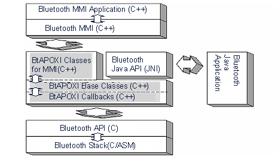

Bluetooth Overview
1 Introduction
Bluetooth is a computing and telecommunications industry specification that describes how mobile phones, computers and other BT devices can easily interconnect wireless with each other.
The APOXI Bluetooth framework forms a part of the APOXI framework and is used to support Bluetooth functionality to the MMI and MMI Applications. This Bluetooth functionality includes the dial up network, head set support, etc.
2 Architecture
The APOXI Bluetooth framework connects the Bluetooth MMI & MMI Applications to the Bluetooth API & Bluetooth Stack. The gray areas in the following figure form the APOXI Bluetooth framework.
The Bluetooth Java API forms the interface to the "BtAPOXI Base Classes", so that the can be used out of Java- Applications. The interface to Bluetooth Java-Applications is formed by Java classes that are implemented via the "Java Native Interface (JNI)" to gain access to the classes of the APOXI Bluetooth Framework, which are implemented.
 |
Figure 1. Bluetooth Architecture
The lower level interface - the interface to the Bluetooth API and the Bluetooth Stack - is written in C and SDL. The BtAPOXI Base Classes do not communicate to the Bluetooth Stack directly. It always uses the Bluetooth API to query some information from the Bluetooth Stack or send commands to the Bluetooth Stack.
Bluetooth is defined of different profiles and each profile provides certain procedures and services.The most basic profile is the Generic Access Profile.
3 Generic Functionality
Bluetooth application is a composition of different BT profiles, specified by [BT-Profiles-Spec]. The basic application functionality provides a main entry point for the user and common functionality for each profile. Bluetooth application is unitized on profile level, which means, it is possible to add or remove functionality that is covered by profile without any impact to the applications architecture. Profiles are encapsulated as separate modules offering an API to other profiles. Profiles can interact using other profiles APIs.
4 General Overview of Packages
The General overview of packages in APOXI Bluetooth are shown in Figure 2.
Figure 2. General Overview of Packages
5 Bluetooth Profiles
Bluetooth uses several different "profiles" for different sorts of interaction. These are designed for a specific task, and not all devices support all profiles. The Bluetooth profiles provided by APOXI Bluetooth and their usecases are described in this section.
5.1 GAP & SDAP Profile
The use cases of GAP & SDAP Profile are explained in this section.
5.1.1 GAP (Generic Access Profile)
Defines the generic requirements for detecting and establishing a connection to a Bluetooth device. This profile defines the generic procedures related to discovery of Bluetooth devices,connecting to Bluetooth devices etc. This profile defines the usecases for the local device. The use cases are listed in the following:
5.1.2 SDAP (Service Discovery Application Profile)
Bluetooth device to discover services registered in other Bluetooth devices.This profile is defined for remote devices. The use cases of this profile are listed in the following:
5.2 FAX and DUN Profile
The use cases of FAX Profile and DUN(Dial-up Networking Profile ) Profile are described in this section.
5.2.1 DUN Profile
Dial-up Networking Profile (DUN) profile defines the requirements for Bluetooth devices necessary to support the Dial-up networking use case. The Bluetooth mobile phone can be used as a wireless modem for connecting to a dial-up internet access server. The use cases of DUN Profile are listed in the following:
5.2.2 FAX Profile
The Fax profile defines the requirements for Bluetooth devices necessary to support the Fax use case. The Bluetooth mobile phone can be used bas a wireless fax modem to send or receive a fax message.The use cases of FAX Profile are listed in the following:
5.3 HS(Head Set) and HF(Hands Free) Profile
The use cases of HS Profile and HF Profile are described in this section.
5.3.1 HS Profile
The Headset (HS) Profile defines the requirements to support the Headset use case. The use cases are listed in the following:
5.3.1 HF Profile
The use cases of HF (HandsFree) profile are same as those provided by the HS Profile. In addition, HF Profile also provides the possibility for multy party call.
5.4 OBEX Profile
OBEX profile is used to get and send data from the remote devices. With this profile it is possible to use a Bluetooth
device for exchanging objects with another Bluetooth device. The Bluetooth device can be used as OBEX Server
as well as OBEX Client. The Profile can be used in conjunction with the APOXI OBEX implementation via a
callback interface and also as stand alone Bluetooth only implementation based on a message interface. It
implements the standard OBEX operations like Connect, Disconnect, Put, Get, SetPath and Abort on both sides
(server and client).